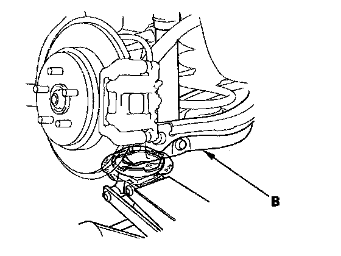
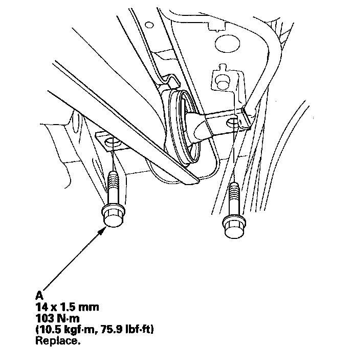
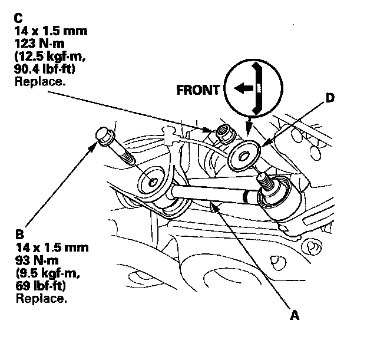

Lower Arm A Removal & Installation
Lower Arm A Removal/Installation1. Raise the rear of the vehicle, and support it with safety stands in the proper locations.
2. Remove the rear wheel.
3. Position a floor jack under the lower arm B. Raise the floor jack until the suspension begins to compress.

4. Remove the flange bolts (A) from the trailing arm.
NOTE: Use new flange bolts during reassembly.

5. Remove the flange bolt (B) from the vehicle.
NOTE: Use a new flange bolt during assembly.

6. Remove the self-locking nut (C) and the washer (D) from the knuckle, then remove the lower arm A.
NOTE: Use a new self-locking nut during reassembly.
7. Install the lower arm A in the reverse order of removal, and note these items:
^ Before installing the wheel, clean the mating surface of the brake disc/drum and the inside of the wheel.
^ Check the wheel alignment, and adjust it if necessary.